Three commercial lanes — industrial, defense, and on-highway freight — partner by partner, after four public quarters. Drawn from Kodiak press releases since November 2025, the four earnings calls since listing, and the Q2 2026 10-Q.
Prepared by @saso_capital · 8 October 2026
Three commercial lanes — industrial, defense, and on-highway freight — partner by partner, after four public quarters. The account draws on Kodiak press releases since November 2025, the four earnings calls since the company listed in September 2025, and the Q2 2026 10-Q.
Over the past year Kodiak mostly hit its operational targets. Its only Driver-as-a-Service customer, Atlas Energy Solutions, went from 10 to 35 driverless trucks; the readiness measure for highway operations climbed from 78% to 96%; and IKEA was named the shipper for the first driver-out highway runs, targeted for year-end on Dallas–Houston. The softer spots: Atlas's 100-truck order slipped from end-2026 to mid-2027, Atlas is still the only multi-year customer, defense revenue is small and lumpy, and the balance sheet got harder — a dilutive PIPE, going-concern language in the 10-Q, and a share price near $1.70, down from $4.36 on the day of the Q2 results.
| LANE | PARTNERS | WHERE IT STANDS | NEXT MILESTONE |
|---|---|---|---|
| Industrial | Atlas Energy Solutions (paying); West Fraser (pilot) | 35 customer-owned driverless trucks; 40,000+ paid driverless hours | High 30s in Q3; 100 trucks by mid-2027 |
| Defense | U.S. Marine Corps, General Dynamics Land Systems, Epirus, Defense Innovation Unit | Integration contract, joint vehicle, demonstrations; revenue small and lumpy | First program award with GDLS; next ROADS phase |
| On-highway freight | IKEA, Charger USA, Roehl, Werner, DTL and others | Hauling with a safety driver or observer; readiness measure at 96% | Driver-out Dallas–Houston by end-2026; Dallas–Laredo after the safety case |
| Balance sheet | — | $151.1M cash and securities at 30 June | Q3 free cash flow guide –$39M to –$41M; next raise |
An oil and gas logistics provider operating the Kodiak Driver in the Permian Basin of West Texas and eastern New Mexico. Kodiak's only Driver-as-a-Service (DaaS) customer, and 56% of Q2 2026 revenue.
| WHEN | WHAT HAPPENED |
|---|---|
| July 2024 | Master services agreement with Atlas. |
| December 2024 | First two driverless trucks delivered — billed as the first customer-owned and -operated driverless trucks in commercial service. |
| March 2025 | Atlas commits to deploying the Kodiak Driver on 100 Atlas-owned trucks. |
| June 2025 | Five driverless trucks at quarter-end. Roush Industries is the upfit partner. |
| September 2025 | Ten driverless trucks at quarter-end. Roush delivered its first Kodiak Driver-powered truck in August. Double-trailer hauling begins. |
| December 2025 | 20 trucks after 10 more in Q4, beating the mid-to-high-teens guide. First autonomous triple-trailer hauling. 10,700+ cumulative paid driverless hours. |
| March 2026 | 28 trucks across 15+ distinct routes. Atlas asks Kodiak to move the remaining trucks to a new truck platform with a cheaper day cab. |
| June 2026 | 35 trucks and 40,000+ paid driverless hours. Service extends to a second simultaneous load-out point on Atlas's Dune Express conveyor, about 90 minutes from the first. |
| July 2026 | Firm delivery timetable: 100 trucks by mid-2027, with the fleet expected on public roads by early 2027, subject to regulatory and operational milestones. Record 176 loads in one day on 20 July. |
| Q3 2026 guide | High 30s. New builds move to the Daimler Western Star 49X with Kodiak's Gen7 hardware, built by Roush; Daimler has approved the integration. Second-half additions should roughly match the first half's 15, which implies about 50 trucks at year-end. |
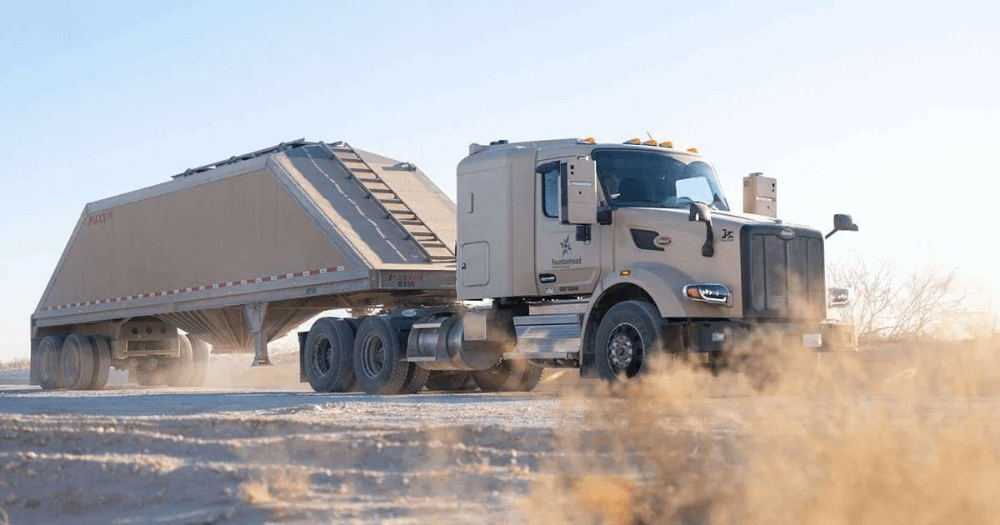
The trucks run with no one in the cab and no continuous remote monitoring, on private roads across the Permian. Remote assistance is used mostly around pickup and drop-off, where the trucks need fine control in constantly changing sites.
How Atlas pays. Atlas pays a single composite license fee covering the autonomy hardware and software, charged per vehicle or per mile, on multi-year terms. Kodiak does not disclose pricing. What we do have: recurring DaaS revenue exited 2025 at a mid-single-digit-million annualized rate on 20 trucks, and the 10-Q shows $26.2M of contracted revenue from one DaaS customer, recognized through June 2030. My own arithmetic: Q2 DaaS revenue was about $2.0M (56% of $3.5M) on roughly 31 average trucks, or about $250k per truck per year — inside the $230K–$300K per-truck run-rate the 2025 SPAC materials assumed.
| WHEN | WHAT HAPPENED |
|---|---|
| Nov 2025 | Q3 2025 call: the CFO confirms end-2026 as the target. |
| Mar 2026 | Q4 2025 call: the remaining 80 trucks over the next few quarters, back-end weighted. |
| May 2026 | Q1 2026 call: first half of 2027, after Atlas switches truck platforms. |
| Jul–Aug 2026 | Atlas release and Q2 2026 call: firm timetable, completion by mid-2027. |
Productivity. Paid driverless hours have grown faster than the fleet. An analyst's math put hours per truck per day at roughly 14, up from about 8 a year earlier: management wouldn't confirm the figures but said uptime, startup and dwell times have all improved, and that its latest software made Permian driving more than 30% more efficient.
One of the world's largest wood products companies. Kodiak's first forestry pilot, first international operation, and first work with flatbed trailers.
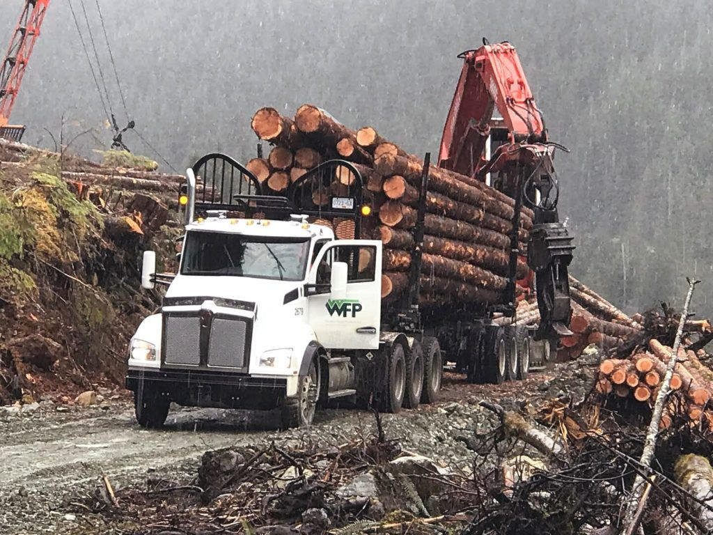
| WHEN | WHAT HAPPENED |
|---|---|
| 7 May 2026 | Pilot announced: the Kodiak Driver will haul timber from forest sites in Alberta, Canada, later in 2026. |
| May 2026 | Q1 call: the pilot runs on private land, which lets Kodiak operate with no one in the cab regardless of the regulatory framework. Kodiak is working with provincial and national regulators on a path beyond private roads. |
| August 2026 | Q2 call: the pilot was due to start within weeks and last a few weeks in Q3, which could set up talks on a commercial agreement over the following months. No further announcement since. |
A second paying industrial customer would matter more than its size suggests: Atlas alone was 56% of Q2 revenue, and the only multi-year contract on Kodiak's books. Management also points to mining in Australia and opportunities in the Middle East, without naming customers.
The United States Department of Defense, also called the Department of War, coordinates the Army, Navy, Marines, Air Force, and Space Force. Kodiak's defense work began with the Army.
| WHEN | WHAT HAPPENED |
|---|---|
| October 2022 | Three-year, $30 million Army contract under the Robotic Combat Vehicle (RCV) program. Software Acquisition Pathway: hardware and software can be bought separately. |
| Nov–Dec 2023 | Platform integrations completed in under six months; 800,000+ autonomous miles in the first year. Two off-road Ford F-150s delivered with Kodiak DefensePods, field-swappable in 10 minutes or less. |
| Sep–Oct 2024 | With Textron Systems, Kodiak integrates DefensePods into the RIPSAW M3, delivered to the Army as an RCV prototype. |
| 2025 | Army contract work completed early in the year. The Army then cancelled RCV, even though Textron's RIPSAW M3 had reportedly won the competition; Senate Appropriations chair Susan Collins publicly criticized the decision in June. No follow-on contract since. |
| Nov–Dec 2025 | On the Q3 2025 call Kodiak flags near-term uncertainty in contract timing from the federal shutdown. In December it demonstrates at the Army's xTech Overwatch event in Texas. |
| PERIOD | REVENUE | SHARE OF REVENUE |
|---|---|---|
| FY 2023 | $15.0 million | 89% |
| FY 2024 | $13.3 million | 89% |
| H1 2025 | $1.0 million | 51% |
| Q2 2026 * | $1.2 million | 34% |
| H1 2026 * | $1.2 million | 23% |
* Booked as "ground autonomy solutions" for the U.S. military in the Q2 2026 10-Q. On the Q2 call, though, the CFO attributed a one-time contribution of slightly over $1M to the DriveOhio autonomous-trucking demonstration program run by Ohio's transportation department (see section 03). Treat the military share as unconfirmed until the two are reconciled.
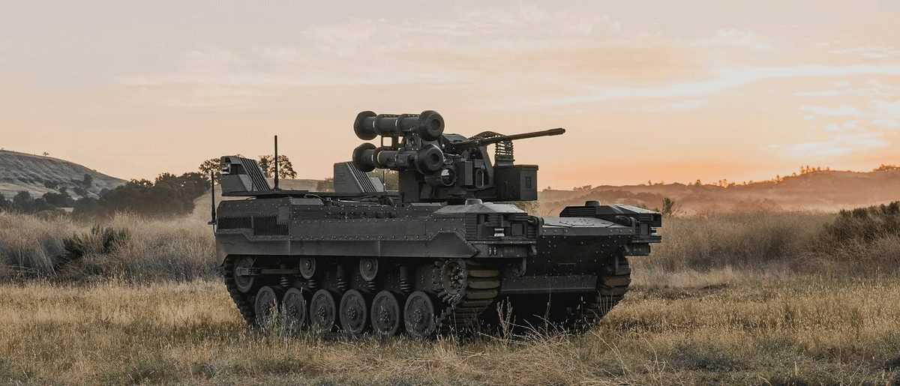
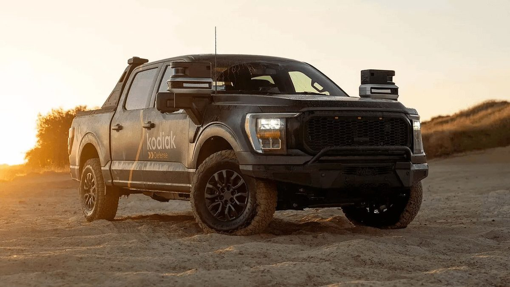
The backdrop. Management frames the Pentagon's commercial-first approach as Kodiak's opening. On the Q1 2026 call Don Burnette cited the FY2027 budget request of more than $50B across land, air and sea for the Defense Autonomous Warfare Group, against $225M in FY2026, and said he expects more revenue opportunities in 2027 and beyond. Kodiak still declines to size defense revenue or give timing. Competitors named on the calls: Forterra and Overland AI.
On 1 May 2025, Secretary of the Army Dan Driscoll and Chief of Staff General Randy A. George published "Letter to the Force: Army Transformation Initiative," answering Secretary of Defense Pete Hegseth's 30 April memorandum, "Army Transformation and Acquisition Reform." The directive said the Army would "cancel programs that deliver dated, late-to-need, overpriced, or difficult-to-maintain capabilities."
RCV was not named in the letter. Breaking Defense reported in May 2025 that the Army planned to halt work on the program anyway. The reported notes: the RCV will stop development, and the future of the robotic software program is unknown; the RCV would not move forward despite a previously expected contract award; the Army still wants robotic combat vehicles, but through a consortium of vendors rather than a down-select to one vendor at almost $3 million a copy; and the idea is to open the next-generation robot back up to industry.
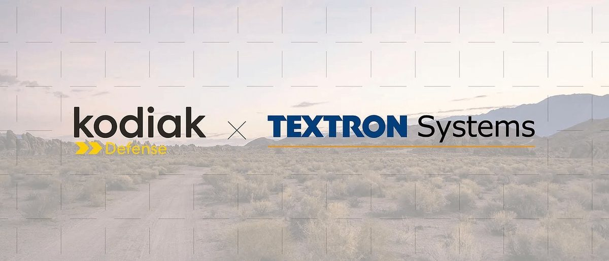
Textron Systems builds crewed and uncrewed military ground vehicles. Kodiak's defense hardware work ran through Textron's RIPSAW M3, one of four RCV prototype teams alongside McQ, General Dynamics Land Systems, and Oshkosh Defense. The Army had planned to pick a best of breed for production, with a production decision in FY2027 and first unit equipped in FY2028.
Textron RIPSAW M3. Kodiak put a DefensePod on each corner for 360-degree coverage at a low profile. Prototypes went to the Army in October 2024. May 2024 was the collaboration announcement: Kodiak's first integration into a vehicle designed with no space for a driver.
| WHEN | WHAT HAPPENED |
|---|---|
| 20 May 2024 | Textron and Kodiak announce the collaboration. Kodiak integrates the Driver into a Textron prototype purpose-built for driverless operations. A technician can swap a DefensePod in the field in 10 minutes or less. |
| September 2024 | The companies unveil the autonomous RIPSAW M3. DefensePods sit on each corner. The vehicle has a flat deck and enough electric power for offensive, defensive, and surveillance payloads, a 5,000-pound payload, a size that fits inside a CH-47, and water jets so it can swim. |
| October 2024 | RIPSAW M3 prototypes delivered to the Army as an RCV prototype. With Textron, Kodiak had integrated DefensePods into the vehicle. |
| March 2025 | Breaking Defense reports industry sources had been told Textron's Ripsaw 3 won the RCV competition and the Army was preparing a deal. |
| May 2025 | Around the same time, Army leaders identified RCV as one program to cut in the 8 percent budget drill. Senate Appropriations chair Susan Collins publicly criticized the cancellation in June. No follow-on contract since. Kodiak's Army contract work itself had already finished early in 2025, with the contract expiring in October 2025 and no outstanding deliverables. |
The Remotely Operated Ground Unit for Expeditionary Fires: a Joint Light Tactical Vehicle (JLTV) carrying the NMESIS anti-ship missile launcher, built for distributed maritime operations and sea denial across the Indo-Pacific.
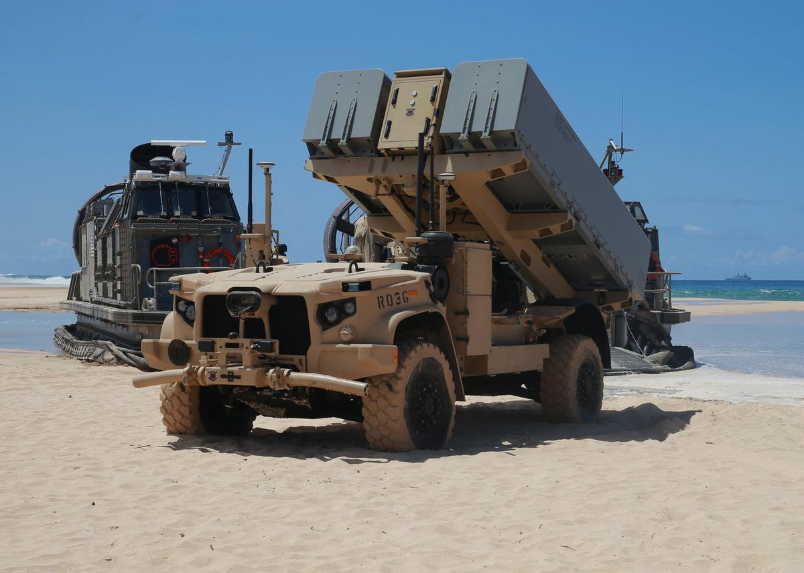
| WHEN | WHAT HAPPENED |
|---|---|
| January 2025 | Forterra wins a contract to integrate its AutoDrive autonomy into the ROGUE-Fires JLTVs. Breaking Defense reported the Marines had put about $30M into that work. |
| 11 Feb 2026 | Kodiak awarded a contract to integrate the Kodiak Driver into the ROGUE-Fires carrier, using its existing software stack and hardware interfaces. Value undisclosed. It is Kodiak's first Marine Corps work, after earlier Army and Air Force engagements. |
| 18 Feb 2026 | Chet Gryczan joins as Vice President and Managing Director of Defense, after about 20 years at defense and automotive-technology organizations. |
| August 2026 | Q2 call: the team is continuing to execute on the program. |
This is the clearest direct contract with a military customer since the Army work ended. It also puts Kodiak head-to-head with an incumbent autonomy supplier on the same vehicle.
General Dynamics Land Systems (GDLS), part of the Fortune 100 General Dynamics group, builds the M1A2 Abrams tank and the Stryker. Epirus makes the Leonidas high-power microwave counter-drone system.
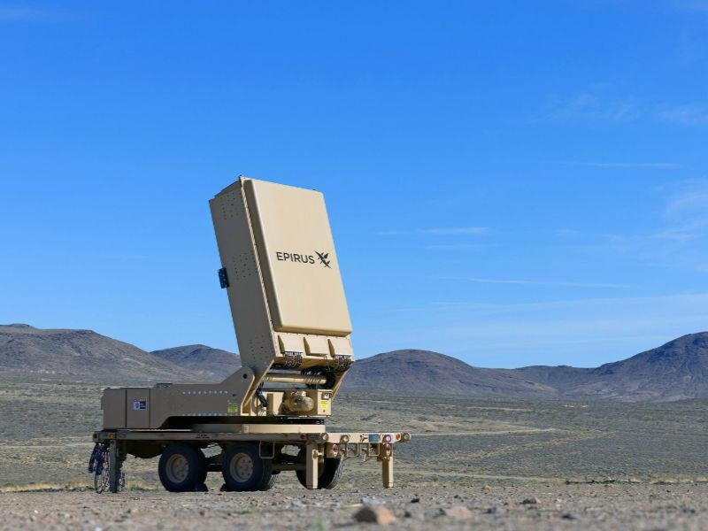
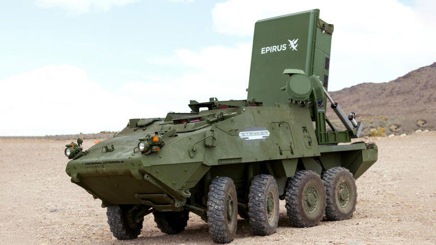
| WHEN | WHAT HAPPENED |
|---|---|
| 24 Mar 2026 | Leonidas Autonomous Ground Vehicle unveiled: a mobile, fully autonomous vehicle for counter-drone, critical point defense and homeland security missions. Epirus supplies the microwave system, Kodiak the driver, GDLS the system integration. |
| 7 May 2026 | Strategic collaboration announced. Kodiak provides the Kodiak Driver; GDLS leads vehicle integration, power, communications and ruggedized platforms. The two will pursue U.S. Army and international programs together. |
| May 2026 | Q1 call: Kodiak is already bidding on future programs with GDLS; the work is not tied to any single program or RFP. |
| August 2026 | Q2 call: management says the partnership puts Kodiak in a stronger position for future autonomous ground vehicle contracts that could matter for revenue in coming years, but gives no sizing. |
The Leonidas vehicle is a commercial Ford F-600 adapted for military use, in line with the Pentagon's push to buy commercial platforms to cut cost and speed up fielding. Mission sets named include logistics resupply, intelligence and reconnaissance, and maneuver. GDLS was itself one of the four RCV prototype teams.
The Pentagon unit that brings commercial technology into the military. Kodiak has worked with it on contested logistics and on the non-tactical vehicle fleet.
| WHEN | WHAT HAPPENED |
|---|---|
| Late 2025 | Project GI, a large autonomy experiment focused on contested logistics in the Indo-Pacific. Kodiak was one of 12 companies picked from 400+ submissions and took autonomous F-150s to Hawaii in support of the Army's 25th Infantry Division. |
| July 2026 | Selected for Phase II of ROADS (Robotic Operation for Autonomous Delivery and Sustainment), which aims to bring customer-proven autonomy to the Pentagon's non-tactical vehicle fleet. Kodiak took part in the July demonstration. |
Kodiak hauls freight for shippers and carriers on its own trucks, with a safety observer on board, and plans to remove the observer on its first highway lane by the end of 2026.
Kodiak lane map from the 10 October 2025 investor presentation, slide 14. Dallas–Houston is the driver-out launch lane. Dallas–Laredo, announced 8 October 2026, is not on this map.
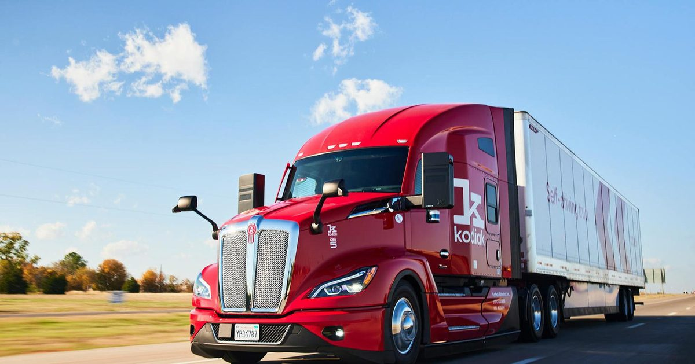
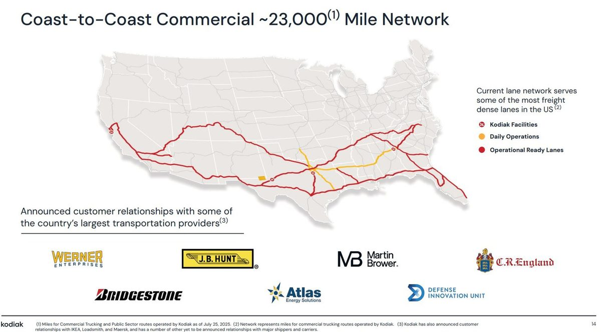
| AS OF | LONG-HAUL ARM | WHERE STATED |
|---|---|---|
| Nov 2025 | 78% | Company year-in-review |
| Feb 2026 | 84% | Q4 results, 10 Mar |
| Apr 2026 | 86% | Q1 results, 7 May |
| Jul 2026 | 91% | Q2 results, 6 Aug |
| Aug 2026 | 93% | 8 Sep release |
| Sep 2026 | 96% | 6 Oct release |
| WHEN | WHAT HAPPENED |
|---|---|
| Since 2019 | Kodiak has hauled freight between Dallas and Houston with safety drivers. |
| November 2025 | Kodiak introduces its Autonomy Readiness Measure (ARM) — the share of highway safety-case claims that are materially complete — at 78%. Driverless launch targeted for the second half of 2026. |
| Feb–Mar 2026 | ARM 84%. Highway-speed testing begins at the American Center for Mobility proving ground in Michigan. A Fortune 500 private fleet starts a Dallas–Houston pilot. |
| Apr–May 2026 | ARM 86%. Texas AV authorization received after Kodiak filed its first-responder interaction plan. |
| Jul–Aug 2026 | ARM 91% in July, 93% in August. The launch program starts on the driverless-ready hardware and software. |
| September 2026 | Dallas–Houston named the launch lane: 219 miles on I-45. Kodiak says its launch trucks now consistently complete end-to-end deliveries without the observer touching the wheel, including on surface streets. IKEA named the launch shipper. |
| October 2026 | ARM 96%. Remaining work: finish the highway probabilistic risk assessment with Kodiak's BreakPoint simulation tool, verify the launch vehicle configuration, and show the truck can keep itself safe at highway speeds. |
Management says reaching 100% and launching happen effectively together. Until then, every public-road run still carries an observer. On the regulatory side, PrePass now feeds Kodiak's safety-inspection data into roadside screening in Texas and Louisiana (section 04), and the House's BUILD America 250 Act carries a federal framework for autonomous trucks, though it is not law yet.
Kodiak AI and Charger USA have launched autonomous trucking between Dallas and Laredo. Trucks running the Kodiak Driver haul refrigerated and dry freight for consumer packaged goods and food and beverage customers on the 435-mile lane between Charger's terminals. The first delivery was completed on 8 September 2026. Charger USA is the U.S. arm of privately held Charger Logistics, an asset-based carrier on truckload, dedicated, temperature-controlled, and cross-border freight between the United States and Mexico.
8 October 2026 announcement. Kodiak truck 11023 with a Charger Logistics trailer. Operations still run with a safety driver in the cab.
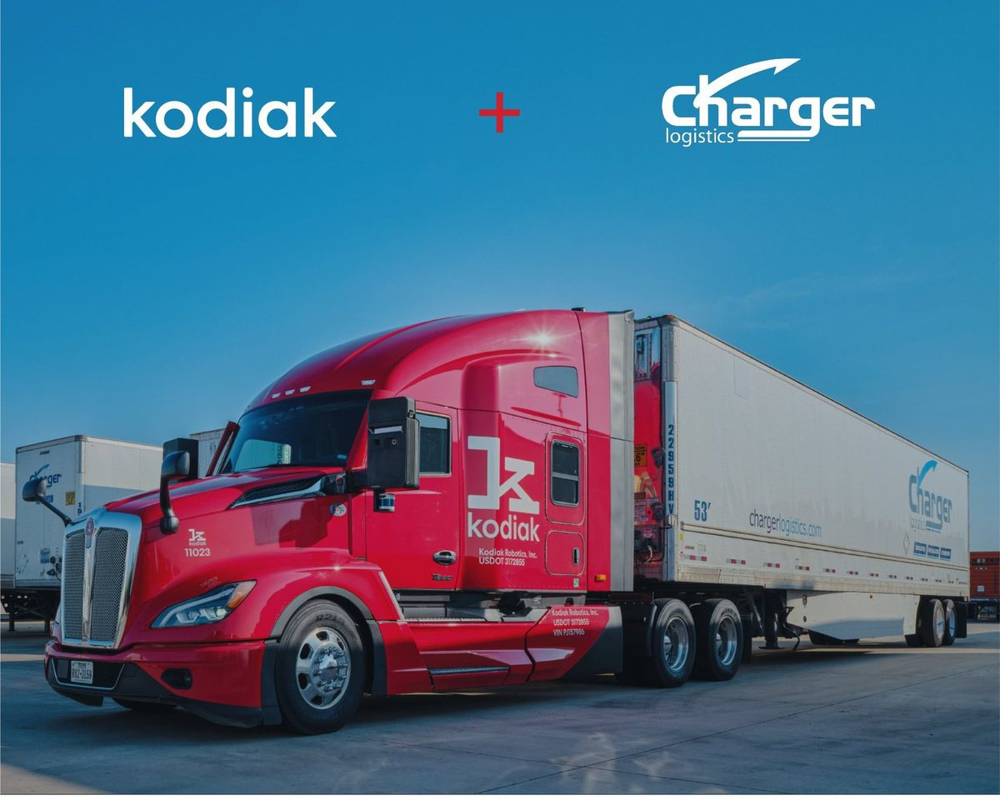
| ITEM | DETAIL |
|---|---|
| Lane | 435 miles, Charger terminals in Dallas and Laredo. Kodiak's first route serving Laredo |
| Freight | Refrigerated and dry, for consumer packaged goods and food and beverage customers |
| First delivery | 8 September 2026 |
| Crew | Safety driver in the cab. Not driverless yet |
| Driverless | Once Kodiak completes the safety case — a structured, evidence-backed argument that the Driver is acceptably safe in this domain. Long-haul launch still targeted for end-2026; ARM was 96% at the end of September |
| Why Laredo | Busiest U.S. freight border crossing. The Port of Laredo handled more than $350 billion of trade in 2025, nearly 40% of all U.S.–Mexico trade. Steady, high-volume flows suit predictable transit times and extended hours |
| Scale path | Charger plans to put the Kodiak Driver on its own fleet and add lanes. Kodiak's model here is Driver-as-a-Service on customer-owned trucks |
The bigger picture sits next to work Kodiak already has in the field. Customer-owned trucks have run with no one in the cab in the Permian Basin since December 2024. The long-haul target is still driverless service by the end of 2026, and the long-haul readiness measure was 96% at the end of September.
Andy Khera, president of Charger USA, said autonomy lets the carrier build a network that serves customers and drivers, pairing Charger's in-house transportation system with the Kodiak Driver so drivers can be home every night. Don Burnette said Charger arrived knowing what it wanted from autonomy and what it needed to see before scaling, and that the lane extends the Driver into a new corridor.
The 8 October release lists commercial partners as Atlas, IKEA, Bridgestone, Werner, C.R. England, General Dynamics Land Systems, and Roehl. Charger is the addition. J.B. Hunt is still not on that list.
IKEA Supply, part of the IKEA home furnishings group. A Kodiak partner for four years, and the shipper for the first driver-out highway service.
Kodiak truck at an IKEA home furnishings warehouse. IKEA is the named shipper for the first driver-out Dallas–Houston runs. A safety observer is still on board until that launch.
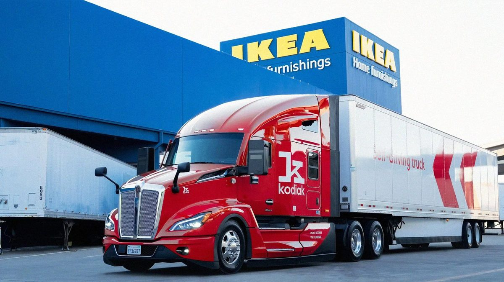
| WHEN | WHAT HAPPENED |
|---|---|
| 2022–2026 | More than 1,300 loads and 750,000 autonomous miles of IKEA freight with a safety observer on board, with what Kodiak describes as a nearly perfect on-time record. |
| 29 Sep 2026 | Named driverless launch partner. The first driver-out leg covers 219 miles, mostly on I-45 between Kodiak's Houston and Dallas-area facilities, as part of IKEA's 292-mile route from its Baytown distribution center to its Frisco store. |
A trucking company and recent recipient of the American Trucking Associations' President's Award, the industry's top safety honor.
| WHEN | WHAT HAPPENED |
|---|---|
| 7 May 2026 | Kodiak starts hauling Roehl freight between Dallas and Houston four times a week, on Kodiak trucks with a safety observer. |
| August 2026 | Q2 call: expanded to five round trips a week. |
A logistics partner to some of the world's leading restaurant brands, working with Kodiak since 2022.
| WHEN | WHAT HAPPENED |
|---|---|
| 2022 | Collaboration begins, leading to an autonomous route, with a safety driver, between Oklahoma City and Roanoke, Texas. |
| March 2026 | New Dallas–El Paso route — Kodiak's second lane longer than a single driver's legal hours-of-service day, after Dallas–Atlanta. Kodiak now runs eight weekly lanes. |
Major U.S. transportation and logistics companies, and two of Kodiak's earliest long-haul customers.
| WHEN | WHAT HAPPENED |
|---|---|
| February 2025 | J.B. Hunt: first- and last-mile delivery, with trailer transfers at Kodiak facilities. 150+ loads and 120,000 miles, including a South Carolina–Texas lane for Bridgestone. |
| March 2025 | Werner: 250+ loads and 200,000 miles on Dallas–Atlanta and Dallas–Jacksonville, while working to integrate Kodiak's technology into its own operations. |
| March 2026 | Q4 2025 call: management lists J.B. Hunt, Werner and Martin Brower as active long-haul deployments. |
| Sep–Oct 2026 | Kodiak's releases through early October list partners as Atlas, IKEA, Bridgestone, Werner, C.R. England, GDLS and Roehl. J.B. Hunt is not on the list. The 8 October Charger release uses the same list and adds Charger USA. |
A California carrier that runs cross-country team routes hauling produce for several of the largest U.S. grocers. Kodiak's first autonomous freight work in its home state.
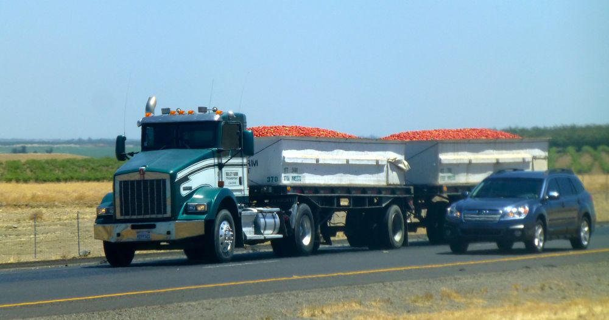
| WHEN | WHAT HAPPENED |
|---|---|
| 13 Aug 2026 | California DMV grants Kodiak a heavy-duty autonomous vehicle testing permit under its newly expanded program — the first time heavy trucks can be tested on California roads. A safety driver must be behind the wheel. |
| 24 Sep 2026 | First deliveries for DTL under the permit, hauling perishable goods on I-5 and CA-99. |
California completes the coast-to-coast picture Kodiak pitches, but management says Texas is the focus for the next several quarters.
The Ohio Department of Transportation's smart-mobility hub, which runs the Ohio Truck Automation Project.
| WHEN | WHAT HAPPENED |
|---|---|
| 7 Apr 2026 | Grant-funded public demonstrations in Ohio and Indiana — Kodiak's first operations outside the Sun Belt, aimed at policymakers and industry on northern freight corridors. |
| August 2026 | Q2 call: the program contributed slightly over $1M of one-time revenue in the quarter. |
These relationships decide what each Kodiak Driver costs and how fast it can be built.
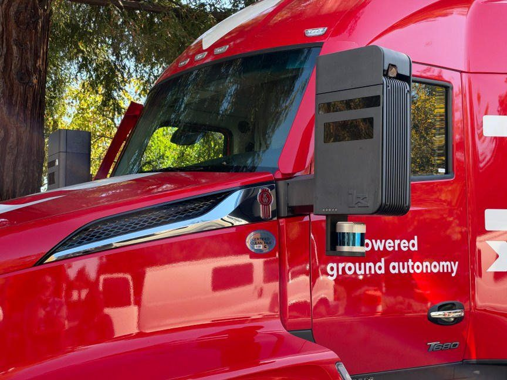
| PARTNER | SINCE | WHAT IT DOES FOR KODIAK |
|---|---|---|
| Roush Industries | 2025 | Upfits trucks with the Kodiak hardware kit on a dedicated line; now building the Western Star 49X trucks for Atlas. |
| ZF | Nov 2025 | Redundant steering systems for 100 Kodiak Driver-equipped trucks. |
| Verizon Business | Dec 2025 | 5G and LTE connectivity for remote assistance, over-the-air updates and fleet management. |
| Bosch | Jan 2026 | Next-generation redundant platform built for automotive-grade reliability and volume production, for upfit or OEM lines; not exclusive. Bosch sensors integrated into Kodiak sensor pods by April. The CFO expects most cost benefits from 2027. |
| NVIDIA | Mar 2026 | DRIVE Hyperion architecture, including Thor compute, for the next-generation Kodiak Driver. |
| Daimler Truck | Aug 2026 | Atlas chose Daimler's Western Star 49X for its remaining trucks; Daimler approved the Kodiak integration. |
| AMD | Aug 2026 | EPYC processors in the Gen7 platform, which has about 50% more compute than Gen6. |
| PrePass | Sep 2026 | Feeds Kodiak's safety-inspection data into roadside screening so inspected trucks can bypass weigh stations; live in Texas and Louisiana. |
| AWS | Oct 2026 | Primary cloud for AI development and safety simulation. Separately, the 10-Q shows a three-year, $28.5M cloud commitment signed in July. |
Gen7. The new platform is compact enough for cheaper day cabs, has about 50% more compute, and in stress testing its sensor pods and compute enclosures are expected to last about 50% longer. The CFO says Gen7 and related engineering changes should cut autonomy hardware cost by a low double-digit percentage from the baseline.
Kodiak listed in September 2025 through a merger with Ares Acquisition Corporation II.
| QUARTER | REVENUE | DRIVERLESS TRUCKS | PAID DRIVERLESS HRS (CUM.) | FREE CASH FLOW | CASH + SECURITIES |
|---|---|---|---|---|---|
| Q3 2025 | $0.77M | 10 | 5,200+ | –$40.0M | $146.2M |
| Q4 2025 | $1.05M | 20 | 10,700+ | –$34.4M | $120.7M |
| Q1 2026 | $1.83M | 28 | 23,500+ | –$35.0M | $90.2M * |
| Q2 2026 | $3.50M | 35 | 40,000+ | –$38.1M | $151.1M |
* Before the $100M PIPE, which closed on 8 May 2026. Q2 revenue includes the one-time DriveOhio contribution of slightly over $1M.
Guidance. FY2026 free-cash-flow guidance moved from –$160M to –$170M in March, to –$155M to –$165M in May, to –$155M to –$162M in August. Q3 guidance is –$39M to –$41M of free cash flow and a truck count in the high 30s. Every quarter with a guide so far has come in better than its free-cash-flow range.
| WHEN | WHAT HAPPENED |
|---|---|
| September 2025 | Merger closes with $171.2M of proceeds, mostly $145M of Series A convertible preferred sold with warrants. |
| December 2025 | $30M senior term loan from Horizon Technology Finance refinances the old facility; interest-only until July 2028, maturing January 2030. |
| May 2026 | $100M PIPE: 15.4M shares at $6.50 plus 15.4M warrants at $6.00, with Ares among the buyers. An analyst pointed out the stock was near $9 at the time. Full-ratchet clauses reset the 2025 PIPE warrants, the non-redemption warrants and the Series A conversion price from $12 to $6 — the contractual floor for the 2025 instruments — creating a $46.1M deemed dividend. Management said liquidity now runs into Q2 2027 and expected S-3 eligibility by the end of Q3. |
| August 2026 | The Q2 10-Q carries substantial-doubt going-concern language. 200.6M shares outstanding at 31 July, plus 40.2M liability warrants at $6.00, 38.9M public and private warrants at $9.28, about 30.6M shares reserved for the Series A (0.99% paid-in-kind dividend) and 75M earnout shares that vest only at $18, $23 and $28. |
| October 2026 | A $10M second-lien loan (16.5% rate) fell due on 1 October. Shares trade around $1.70, versus $4.36 on 6 August. |
My arithmetic on runway. First-half free cash flow was –$73.1M. The full-year guide therefore implies roughly –$82M to –$89M in the second half, which would leave about $62–69M of cash and securities at year-end before any new raise. The $6 floor caps further resets on the 2025 warrants, but the 2026 PIPE warrants carry their own down-round provisions, and any raise near today's price is heavily dilutive.
This primer is not a company filing, not investment advice, and not affiliated with Kodiak AI. Prepared by @saso_capital. Figures come from Kodiak's press releases, earnings calls and SEC filings listed below. Per-truck revenue, implied fleet size and year-end cash are arithmetic, not company guidance. Pictures are labeled. The Atlas sand truck and the defense F-150 come from company materials; the others show a Kodiak truck, a partner platform, or an operating environment, and are marked where they are not a Kodiak vehicle.
Kodiak press releases and posts, 2025
Kodiak press releases and posts, 2026
Earnings calls
Filings and other